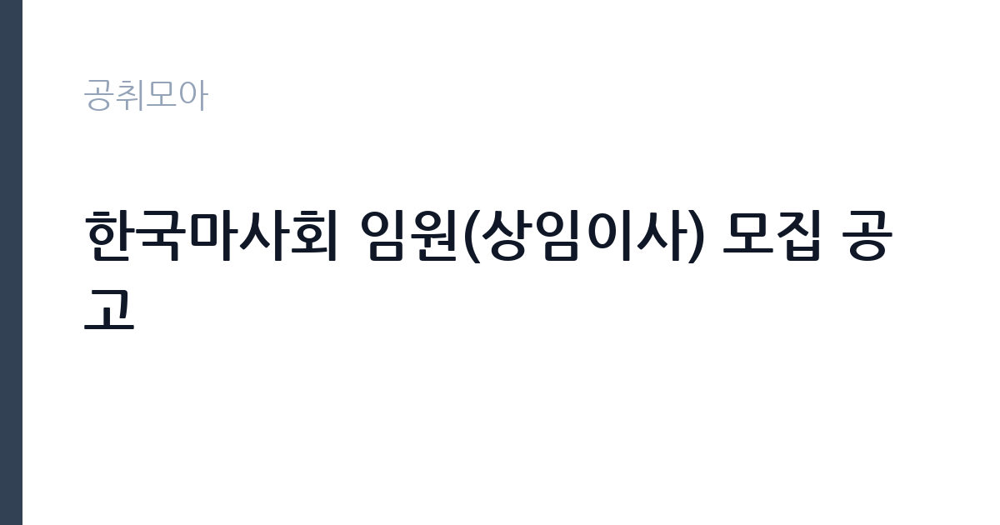

[공공기관] 한국마사회 임원(상임이사) 모집 공고
한국마사회 · 경기 · 마감 2026-10-07 (D-14) · 출처 나라일터

한눈에 보는 모집 조건
| 기관 | 한국마사회 |
|---|---|
| 공고명 | 한국마사회 임원(상임이사) 모집 공고 |
| 고용형태 | 임원 |
| 근무지 | 경기 |
| 게시일 | 2026-09-23 |
| 마감일 | 2026-10-07 (D-14) |
지원자격, 이렇게 읽으세요
- 상임이사 1명
- 접수 ~2026-10-07 마감
- 세부 조건은 원문 공고문 확인
변화와 개혁을 지향하는 경영의지와 리더십, 조직관리 능력, 책임감과 청렴성, 직업윤리 의식을 갖춘 분이 대상입니다. 공공기관 운영법과 한국마사회법, 부패방지법의 결격사유에 해당하지 않아야 하며 말산업과 레저, 공공경영 분야의 전문적 지식과 경험이 요구됩니다. 세부 자격과 결격사항, 제출서류 양식은 원문 공고문에서 확인하시기 바랍니다.
이 공고의 포인트
이 공고의 무게는 상임이사라는 자리 자체에 있습니다. 한국마사회는 자본금 1조 5,000억원, 매출 7조원대, 직원 800명 규모의 대형 공공기관으로 임원 경력은 이후 커리어의 강력한 자산이 됩니다. 지원서에는 최근 6개월 이내 컬러 증명사진이 필요하며 증빙 가능한 사항만 기재하는 것이 원칙입니다. 경영 현안에 대한 비전을 가진 분께는 뜻을 펼칠 무대가 될 수 있습니다.
전형은 어떻게 진행되나
임원추천위원회 심사를 거쳐 선발하며 지원서와 자기소개서, 직무수행계획서 등 제출서류 심사와 면접심사가 이어질 것으로 예상됩니다. 세부 전형 단계와 일정, 제출서류 목록은 원문 공고문에서 확인하시기 바랍니다. 마감일은 10월 7일이니 계획서 작성 시간을 충분히 확보하시기 바랍니다.
원문에서 확인한 전형 방식
말산업으로 국가경제 발전과 국민의 여가선용에 기여하는 한국마사회가 전문성과 역량을 갖춘 임원을 아래와 같이 모십니다. □ 공모직위 및 인원 : 상임이사 1명 □ 임 기 : 2년 (직무수행실적 등에 따라 1년 단위 연임 가능) □ 자격요건 ○ 경마 및 말산업 육성을 통해 축산발전과 국민의 복지증진 및 여가선용에 이바지할 수 있는 풍부한 지식과 경험을 보유한 자 ○ 변화와 개혁을 지향하는 경영의지와 상임이사로서의 덕목을 갖추고, 리더십과 조직관리 능력을 보유한 자 ○ 책임감, 청렴성, 도덕성 등 투철한 직업윤리 의식을 갖춘 자 ○ 그 밖의 상임이사 수행에 필요한 전문적 지식과 경험을 보유한 자 □ 결격사항 (첨부#2 : 결격사항 및 직무수행요건 관련 규정 참조) ○ 「공공기관의 운영에 관한 법률」 제34조(결격사유)에 해당하는 자 ○ 「한국마사회법」 제29조(임원의 결격사유)에 해당하는 자 ○ 「부패방지 및 국민권익위원회의 설치와 운영에 관한 법률」 제82조 (비위면직자 등의 취업제한)에 해당하는 자 □ 제출서류 (첨부#3 : 제출서류 양식 참조) ① 지원서 1부 (최근 6개월 이내 컬러 증명사진 필수) * 증빙서류 제출이 가능한 사항에 대해서만 기재할 것(미제
이런 분께 추천해요
- 말산업과 경마, 축산 분야의 전문 지식과 경험을 갖춘 분께 적합합니다.
- 대형 공공기관 경영과 조직 혁신 경험이 있는 분께 추천합니다.
- 레저산업과 사회공헌, 공공경영 비전을 가진 분께 어울립니다.
지원 전 체크리스트
- 결격사유 해당 여부를 관련 법령 기준으로 점검했습니다.
- 제출서류 양식과 증빙서류를 빠짐없이 준비했습니다.
- 직무수행계획서를 마사회 현안에 맞춰 작성했습니다.
- 마감일과 접수처를 원문에서 확인했습니다.
모집 일정과 제출 타이밍
마감일은 10월 7일로 접수기간이 약 2주입니다. 임원 공고는 직무수행계획서와 경영 구상의 완성도가 당락을 가르는 만큼 충분한 작성 시간을 확보하시기 바랍니다. 마사회 홈페이지의 경영공시와 중장기 전략 자료를 먼저 분석한 뒤 계획서를 쓰시는 것을 권합니다.
직무 이해하기: 공공기관
한국마사회 상임이사는 회장을 보좌하며 경마 시행과 말산업 육성, 사회공헌 사업을 이끄는 경영진입니다. 과천 경마공원과 전국 지사, 목장 등 대규모 조직과 시설을 총괄하며 매출 7조원대 사업의 책임경영을 맡습니다. 공공기관 경영평가와 청렴, 안전 관리도 임원의 핵심 책무입니다.
자기소개서 작성 팁
임원 지원서에서는 경영 철학과 기관 진단, 임기 중 목표를 수치와 함께 제시하셔야 합니다. 마사회의 사업 구조와 재무, 현안을 분석한 뒤 매출 기반 다변화와 말산업 육성, 조직 혁신 방안을 구체적으로 쓰시기 바랍니다. 과거 경영 성과는 임기와 실적 수치로 증명하는 것이 설득력을 높입니다.
면접 준비 포인트
면접에서는 마사회 현안에 대한 진단과 해법을 질문받을 가능성이 큽니다. 온라인 발매와 불법경마 대응, 말산업 농가 지원, 사회공헌 방향에 대한 견해를 정리해 두시기 바랍니다. 청렴과 윤리경영에 대한 소신도 자주 묻는 항목이니 본인의 경험을 사례로 준비하시기 바랍니다.
급여·근무조건 읽는 법
임원 보수는 회사내규와 공공기관 임원보수 지침에 따릅니다. 참고로 2026년 6월 동일 직위 모집 공고에는 연봉 1억 2,116만원 수준이 안내된 바 있습니다. 출처는 채용플랫폼 공고 인용이며 회사내규 기준입니다. 이번 공고의 확정 조건은 아니므로 정확한 기본연봉과 성과연봉은 원문 공고문에서 확인하시기 바랍니다.
자주 묻는 질문
- 임기와 연임 조건은 어떻게 되나요?
임기는 2년이며 직무수행실적 등에 따라 1년 단위로 연임이 가능합니다. 세부 평가 기준은 성과계약과 관련 규정에서 확인하시기 바랍니다. - 어떤 결격사유가 적용되나요?
공공기관 운영법과 한국마사회법, 부패방지법의 임원 결격사유가 적용됩니다. 세부 조항은 원문 공고문의 첨부 규정을 참고하시기 바랍니다. - 지원서에 사진이 필요한가요?
최근 6개월 이내 컬러 증명사진이 필수이며 증빙 가능한 사항만 기재하는 것이 원칙입니다. 세부 서류 목록은 원문에서 확인하시기 바랍니다.
함께 보면 좋은 공고
[공공기관] 발전공기업 통합실무지원단장 채용공고 — 마감 2026-10-08[공공기관] (재)인천광역시부평구문화재단 대표이사 채용 공고 — 마감 2026-10-13[공공기관] [설악산] 설악산국립공원 기간제 직원[환경관리(한시인력)] 채용 공고 — 마감 2026-10-01출처: 나라일터 공개정보를 바탕으로 공취모아가 정리한 안내글입니다. 모집 조건·일정은 변경될 수 있으니 지원 전 반드시 원문 공고문을 확인하세요. 본 글은 정보 제공용이며 합격을 보장하지 않습니다.